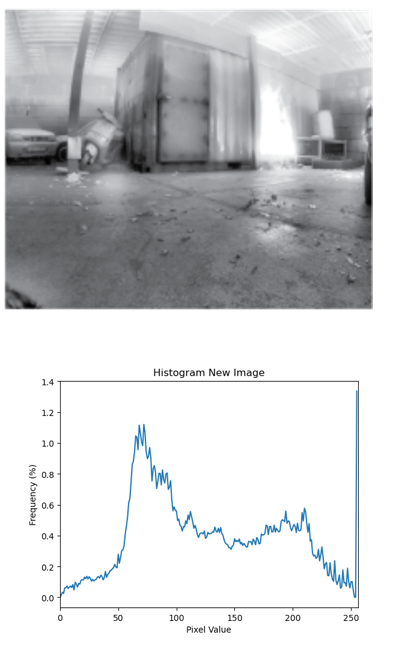
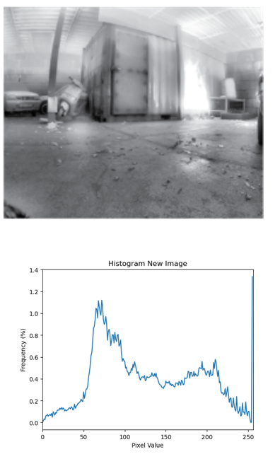
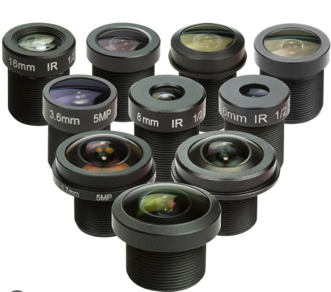
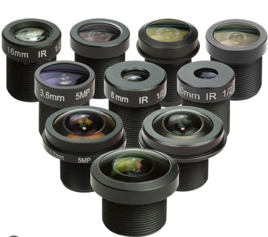
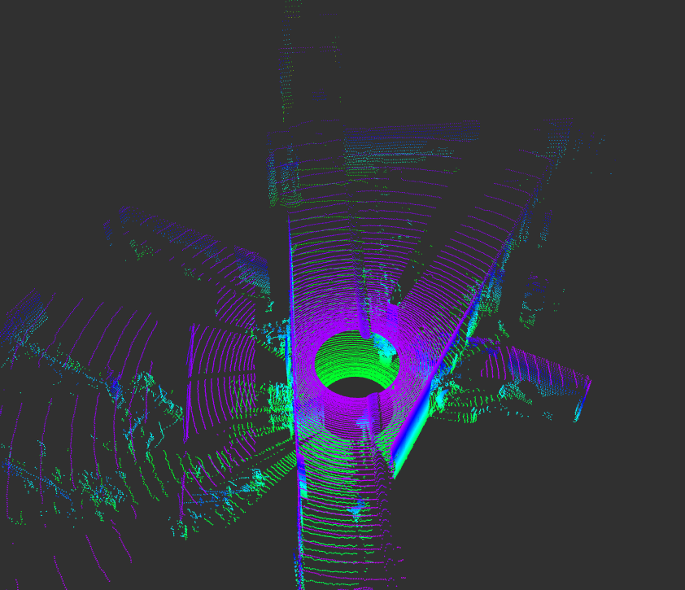
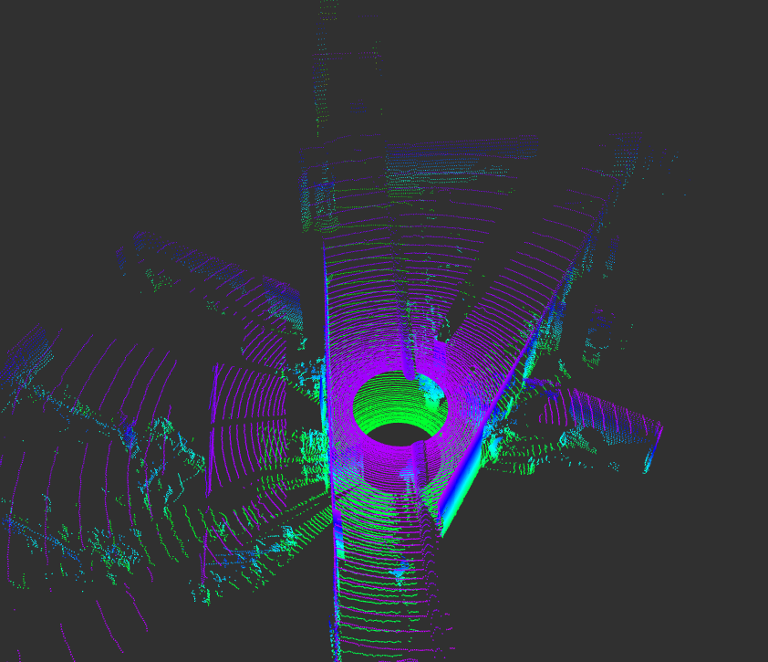
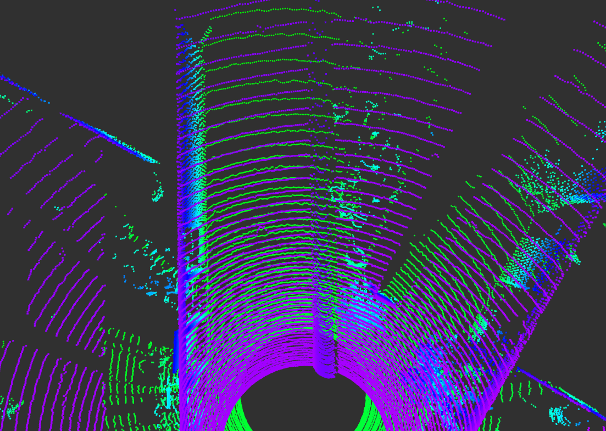
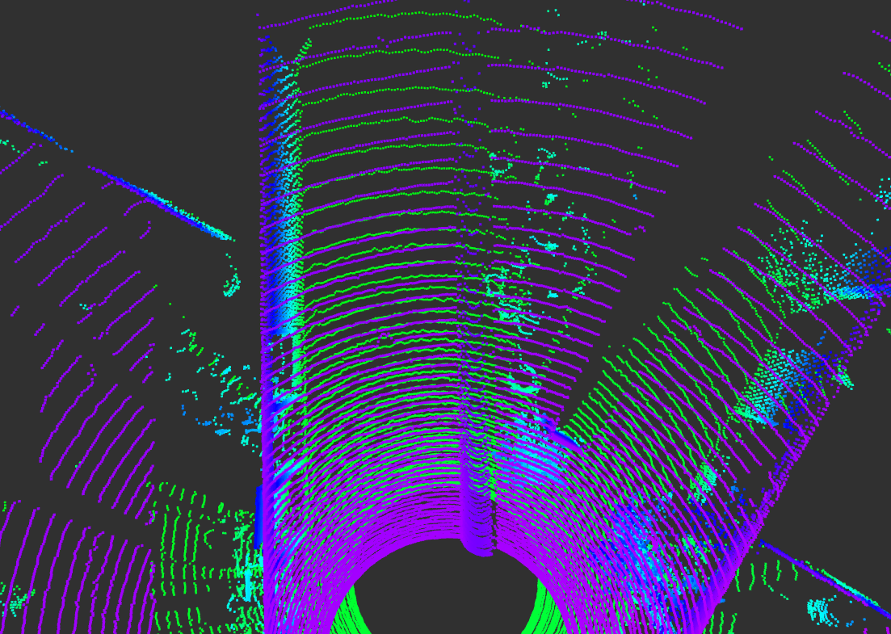
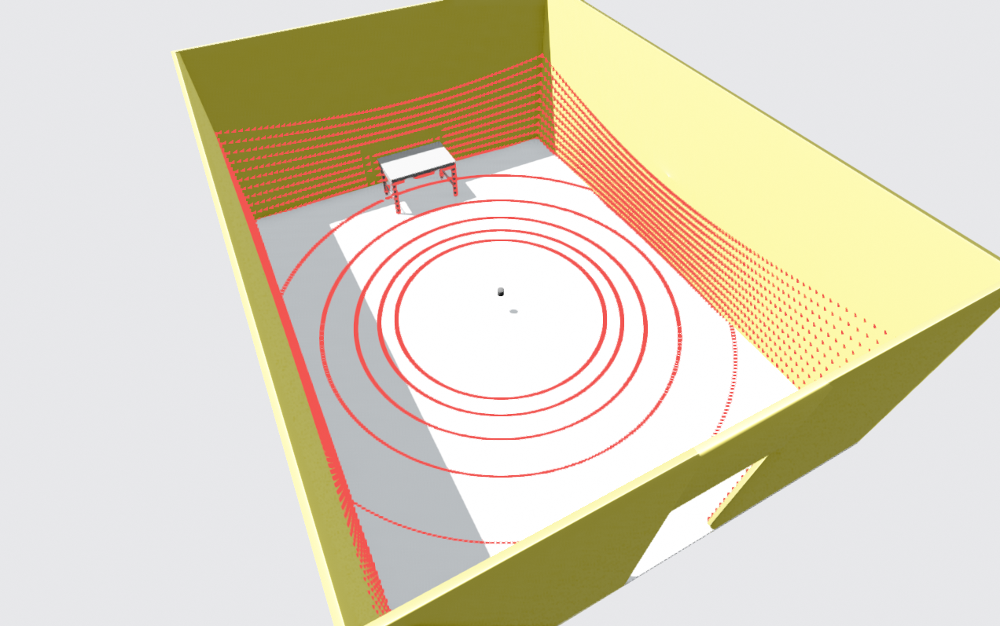
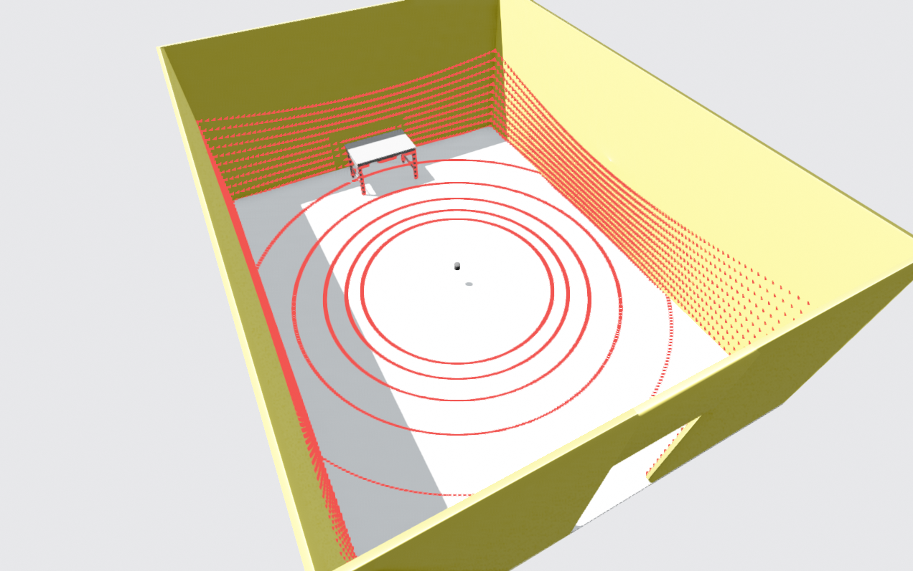

Chapter 2: Sensor Selection for SLAM
Objectives
In this chapter, you will meet the most common sensor types used in SLAM and see where each one shines or struggles. By the end, you are expected to:
- What the common sensors are and what information do they offer.
- Pick a sensible sensor (or a combination) for your own application.
- Weigh the usual trade-offs: accuracy vs. cost, compute load, environment, and how mature the open-source algorithms for your application are.
- Spot the key specifications that matter when buying or configuring sensors for SLAM.
Role of Sensors in SLAM Architecture
SLAM is usually split into two parts: a front-end and a back-end.
Front-end: It is the part of SLAM that turns raw sensor measurements into compact, useful cues about motion and the scene. If we use a camera for a SLAM algorithm, we will have visual SLAM. Assuming that the camera gives us images of $640\times480$, we will end up with 307200 pixels. This is an enormous amount of information that is very difficult to comprehend and use. The front-end reduces this load by extracting just the most informative bits, so the rest of the system has something manageable to work with.
Back-end: It is the core algorithm, that estimates the robot’s pose and builds the map from those cues.
Your sensor choice largely shapes the front-end: what you can extract, how robust it is, and how much computation it needs. In short, the sensor defines the front-end’s job, and through that, it influences the back-end’s workload and accuracy.
2.1 Cameras for SLAM
2.1.1 Image
If you’re new to computer vision, here’s the core idea: an image is a matrix of numbers. Each cell is a pixel, a tiny dot with a color that defines how a small part of the scene looks like. It should be clear that by increasing the number of pixels, more detail we be captured about the scene.
2.1.2 Camera-based SLAM Front-end
Cameras provide the richest information among the common sensors used for SLAM. The real challenge in using cameras is not getting the data, but extracting the useful information from all those pixels.
When you choose cameras for your SLAM problem, you will often end up with a similar front-end architecture. Having a basic understanding of this architecture is very useful, since it gives you an idea of why specific sensors are better and more suitable to SLAM while others are not. A general example is shown in Figure 1. This does not mean that all SLAM algorithms follow this architecture exactly, but it gives a good overall idea of what typically happens in camera-based SLAM.
 |
|---|
Figure 1: Camera-based SLAM architecture. Taken from the robor_test_3 sequence in SMARTNav dataset. |
As emphasized previously, cameras produce a lot of pixel data. The first step is to Extract Features, i.e., to keep only the parts of the image that are necessary and useful. In Figure 1, you can see some common ways of extracting features. For instance, we can detect:
- Edges in the image,
- Feature points (often corners or sharp points in the environment that are easy to detect),
- Or lines in the scene.
These are popular feature types for two main reasons: (i) It is relatively easy and fast to detect them using classical computer vision techniques. (ii) It is possible to track these features across different consecutive image frames. Among these intermediate representations, feature points are the most commonly used in SLAM.
After feature extraction, it is important to maintain a unique identity for each feature across frames. For example, if you see the corner of the house's rooftop (as in Figure 1) as a unique feature in the environment, you should be able to detect the same corner a few moments later and recognize that it is the same feature you saw before. If you successfully do this, you have performed correct Feature Tracking. Figure 1 also shows a simple depiction of feature tracking, where features are tracked across two consecutive image frames. The positions of the features in the first and second frames are marked by red dots, and the green lines connect the former and current locations of the same features.
The robustness of SLAM methods is tightly related to the success of the feature extraction and tracking. Our choice of camera sensors can affect this. Generally, having an image with minmum blurring and sharper details that maintains a constant color composure of the details, regardless of light intensity, helps a lot. Moreover, the field of view should be large enough so that you do not lose the features you were teacking with a rapid motion. But we will touch on these requirement later on.
Although tracking the features in the environment is essential for SLAM and provides a sense of relative motion with respect to the scene, it is not enough to measure motion in full 3D. The feature points should not only be tracked in the 2D image; we also need to estimate their 3D locations in space.
For each feature point, we would like to estimate a 3D position based on the images. This is not trivial, but it is achievable using either monocular or stereo-based camera configurations. In Figure 1, this “uplifting” of 2D features from the image plane into 3D space is visualized: from this, a metric distance between the camera and the 3D position of that feature becomes available. Note that this step is highly dependent on correct knowledge about the camera's physical paramters such as its Focal Length. These estimates usaully come from precise calibration of the sensor that we will discuss in later chaters.
2.1.3 Camera modalities
The term modality is referring to what kind of light does a camera measure and how it measures it. Most of the cameras capture the visible light, which is a small part of electromagnetic spectrum. In Figure 2, we display this spectrum and the visible light is highlited by rainbow colors. Here, the color, monochrome, NIR, and thermal cameras are more interesting for us, since they are often used for SLAM.

Color cameras: These cameras capture a scene in a similar way to how we see it, in different shades of colors. For each pixel of an image, there are 3 values for red, green, blue (RGB) that their combination will create a uniqe color. But the camera sensor does not read 3 values (RGB) at each pixel of the physical sensor directly.
To capture color images, a Color Filter Array (CFA) is formed, such that on each pixel either an R, G, or B filter is used. An R filter for instance, only allows the red light frequency to pass. For each pixel, the other two values will be interpolated from the neighboring pixels. This process is also known as Demosaicing. Figure 3 diplays the mechanism in which the color images are formed in the sensor.
Why are the working principle of color camera important for us? To answer that, lets understand the monochrome mechanism as well.
Monochrome: Unlike color cameras, monochrome cameras do not use a color filter array. All pixels on the sensor are used directly to capture light from the scene. This means that the full resolution of the sensor is used for details, no color interpolation (demosaicing) is needed, and the image is in shades of gray instead of color. The monochrome sensor is also portrayed along with a color sensor in Figure 3, for better comparison.
Now going back to the relevance of the monochrome vs. color mechanism for someone who wants to use one of these cameras for their robot's navigation:
Monochrome cameras usually give sharper detail and cleaner measurements from the same number of pixels. Another difference is that each filter of a color camera only passes a narrow band of wavelengths (related to R, G, or B). In Figure 2, we show approximate curves for the wavelength ranges covered by the R, G, and B filters (red, green, blue bell curves), and by a monochrome sensor with no filter (the gray bell curve). As you can see, a monochrome sensor covers a wider range of the spectrum compared to the combination of R, G, and B filters. In particular, it often captures more of the near-infrared range. Because of this, in a color camera, each pixel receives less light (fewer photons) because of the filters, while in a monochrome camera, more light reaches each pixel, so the image is brighter and looks better under low-light conditions.
In summary, monochrome sensors give more details and perform better in darkness. Does this mean they are ideal for SLAM? It depends. If you prioritize more reliable feature tracking and pose estimation even in low-light, monochrome is the choice, while if you prefer more informative maps, colors might still be needed. Keep in mind that the modality is not the only determinig factor for choosing a sensor and we introduce more criteria later.

To make this discussion more concrete, Figure 4 compares images of the same scene taken with cameras sensitive to different parts of the electromagnetic spectrum.
An RGB color camera captures a nice, human-like view of the lit areas in the scene. Because it sees color, it also gives us more semantic information; for example, it can help distinguish car's body from building walls based on their colors.
A monochrome camera that is also sensitive to some near-infrared (NIR) light can show more detail in shadowed areas. Objects that look very dark in visible light might still reflect NIR light, so they become more visible. The image is still grayscale, but it can provide a strong geometric understanding of the scene (edges, shapes, textures), even when parts of it are poorly lit.
As we move to cameras that work at longer wavelengths (towards mid-infrared and far-infrared), the camera behaves more like a thermal camera. These cameras can see heat. They work much better in complete darkness and can highlight warm objects like humans, engines, or electronics. However, the sensors and lenses for these wavelengths are more specialized and usually more expensive, and the images often contain less fine detail than visible or NIR images.

2.1.4 Camera configurations
Monocular camera: A monocular camera is simply a camera with a single lens. It captures one image at a time, just like the camera on your phone. From a robotics and SLAM point of view, this setup has some clear benefits. It is compact, cheap, consumes minimal power, and makes the design easy. The main drawback is that it makes 3D understanding of the scene more difficult.
Intuitively, if you only see the world from a single point of view, it is hard to tell how far away things are. This “how far?” question is called Depth Estimation. To reliably estimate depth using pure geometry, you normally need to see the same object from at least two different viewpoints. This 3D understanding of the surroundings is central to most SLAM systems.
So at first glance, using only one camera seems to prevent us from knowing the distance to objects in the scene. Fortunately, there are a couple of tricks that help.
First, there is a classical computer vision approach to this problem. Even with a single camera, we can still move it around. If the camera observes the same object in multiple frames taken at different positions, we effectively create multiple viewpoints over time. With enough motion (especially sideways motion, not just rotation), we can use basic geometric reasoning, known as Triangulation, to compute how far objects are from the camera. The downside is that depth is not available immediately in each frame. The SLAM system needs some time and movement before it can build a good 3D understanding of the scene.
A more recent approach uses deep neural networks to estimate depth from a single image. These networks are trained on large datasets where the correct depth is known. Over time, they learn patterns like:
- “Things higher in the image might be farther away.”
- “Objects that look smaller might be more distant.”
- “Certain textures and shading suggest particular shapes and distances.”
This is somewhat similar to how humans can still judge distance even if they close one eye. We lose the geometric stereo cues, but we still have experience-based cues: relative size, perspective lines, shadows, and so on.
Stereo camera: A stereo camera setup consists of two monocular cameras mounted next to each other, pointing in (almost) the same direction and sharing most of their field of view. This is very similar to how our two eyes see the world.
Because we have two views at the same time, we can estimate depth in every frame. For each point in the scene, we find the matching pixel in the left and right images. From the difference in their positions (called disparity) and the known distance between the cameras (knwon as baseline), we can compute how far that point is from the cameras using triangulation. More separation between the cameras makes depth estimation more accurate at longer distances, but it can also make the system bulkier and more sensitive to calibration errors.
In Figure 4, examples of depth estimation using monocular and stereo cameras are shown. The star shape represents an example object in the scene.
With a monocular camera, we only have one image at each time instant. To get depth, we wait until the camera has moved. As the camera moves, it sees the same object from different viewpoints. If these viewpoints are sufficiently far apart in space (not just small rotations), we can create a kind of virtual baseline by pairing images from different times. Using these pairs, we can form triangles between the camera positions and the object and apply triangulation to find the distances.

However, there is an important limitation. With a single camera, all distances are only determined up to a scale factor. In other words: we can reconstruct the shape of the scene and the relative distances between objects correctly, but we do not know the true metric values (distances in meters) just from the camera alone. This is known as the scale ambiguity in monocular SLAM. To recover the true metric scale, we need an extra hint, such as using a complementary sensor capable of metric measurments (IMU, wheel odometry, or LiDAR).
With a stereo camera, we also form a triangle between the two camera centers and the scene point. But now we know one side of the triangle exactly: the baseline (the distance between the two cameras), because we physically measured it and calibrated the system. This makes some big differences. Firstly, depth can be computed in a single time instant. Moreover, the result is directly in metric units (e.g., meters), without needing extra sensors for scale. This is why stereo cameras are very attractive for SLAM when you want both real-time and metric depth with a relatively simple sensor setup.
2.1.5 Sensor requirements
The camera used in SLAM should have some specific characteristics. Knowing about these characteristics might help you choosing the best option for running SLAM on your robot.
- Field of View (FOV):
For SLAM methods, a wide field of view is usually desirable. A wider FOV lets the camera see more of the environment at once, which means: (i) More potential features in each frame. (ii) A better chance to pick stable, well-distributed features to track. (iii) Less chance of losing everything when the robot makes a quick motion or something briefly blocks part of the view.
However, very large fields of view (above roughly 120°) become more challenging to calibrate (a step you must do before running your SLAM system). In practice, many open-source calibration tools struggle to produce accurate calibration for extreme wide-angle or fisheye lenses.
Figure 5 compares the effect of having a wider FOV. The red dots indicate spots in the image that are selected as feature points in the SLAM front-end using a common feature detection algorithm.
In the wide-FOV image, it is usually easier to find high-quality features (for example, clear and unique corner points). In the narrow-FOV image, the algorithm often has to rely on lower-quality features (for instance, many similar points inside the trees that are less unique) to maintain a sufficient number of feature points.
Another difference is robustness to motion. With a wide FOV, you need a larger sudden motion of the camera to lose sight of all features at once, because the camera sees more of its surroundings. This helps make SLAM more stable during fast rotations or small occlusions.
The main drawback of wide-FOV lenses is image distortion. Straight lines and flat surfaces appear curved, especially near the image borders. The wider the FOV, the more the image looks bent or spherical. These distortions must be corrected (rectified) during the calibration stage; otherwise, the SLAM front-end will have a harder time interpreting geometry correctly.

- Resolution:
If the resolution is too low, visual SLAM may not be able to detect and track enough good features in the image, especially at longer distances. On the other hand, very high resolution introduces unnecessary processing load. The higher number of pixels allocates more CPU/GPU just to tracking features across frames. Also the communication links such as USB ports will be a bottleneck. Ultimately, more time will be spent on each image, thus, updating the map or the position estimation will be done at longer intervals.
In practice, you should choose a resolution that is high enough to see stable features (e.g., corners, textures) at the distances you care about, but not so high that it slows down your SLAM system. For that, HD resolution is about a good trade-off.
- Shutter:
For visual SLAM, global shutter sensors are ideal, because they minimize motion-related distortions. In a global shutter camera, all pixels are exposed at the same time, so fast motion does not bend or skew objects in the image.
In rolling shutter cameras, the image is captured line by line from top to bottom. If either the camera or the scene is moving during this time, straight objects can appear curved. This is called the rolling shutter effect and it can give an unrealistic depiction of the scene.
The difference between global and rolling shutter is illustrated in Figure 6 (here, the rolling shutter effect is simulated). On the left, you see the accurate representation of the scene as a global shutter camera would capture. In the middle, the motion of the component in the image is visualized, where all vectors are originating from and expansion point. On the right, the rolling shutter image of the same scene is displayed. As you can see, motion causes the rolling shutter image to give an unrealistic representation. Vertical lines become bent, especially near the image borders. Fast-moving parts of the image become more blurred and distorted.


corridor_ground_1 sequence in SMARTNav dataset.
The strength of the rolling shutter effect depends on how fast things move in the scene (or how fast the camera moves). For slow-moving robots, or setups without strong vibrations, the effect can be almost negligible, and a rolling shutter camera can be perfectly usable and more affordable. For more dynamic applications (fast drones, agile ground robots, strong vibrations), a global shutter sensor is strongly recommended.
Many low-cost cameras are rolling shutter but offer adequate resolution for SLAM. Global shutter cameras with high resolution tend to be more expensive, but they provide cleaner geometry for motion estimation.
- Data Rate:
A higher frame rate (more images per second) can help in fast motion scenarios, because feature tracks are less likely to be lost between frames. Here, “high” means higher than the usual 30 frames per second (FPS) that many cameras provide. However, excessively high FPS (for example, above 90 FPS) is often unnecessary in practice: Most SLAM systems cannot process such a high-frequency stream in real time. They will have to drop frames to keep up, which wastes bandwidth and processing. In most robotics applications, something in the range of 30–60 FPS is a good compromise between smooth tracking and computational load.
- Dynamic Range:
Dynamic range describes the camera’s ability to capture details in both dark and bright regions of an image at the same time. It is often defined as the ratio between the brightest intensity and the darkest intensity the sensor can represent. Any light above this range will be shown as pure white (overexposed, no detail). Any light below this range will be pure black (underexposed, no detail).
For SLAM, higher dynamic range guarantees the system can still detect and track features when part of the scene is in deep shadow and another part is brightly lit (for example, a robot exiting a dark corridor into sunlight).

- Bit-rate:
The normal image data given by most cameras is an array of 8-bit pixels. This means that each pixel value is represented by 8 bits (8 zeros or ones). As a result, each pixel can take $2^8 = 256$ different values. In simpler terms, a standard 8-bit camera can represent each color channel in 256 different shades.
If we use a higher bit depth, such as 10-bit, the number of possible values per pixel jumps to $2^10 = 1024$. This means the camera can represent much finer differences in intensity. This is especially useful when the lighting is very uniform (for example, a dark hallway), or the textures in the scene have colors that are very close to each other.
In Figure 8, the left image was captured and converted to 8-bit format (256 shades). Below or next to this image, a histogram of pixel values is shown. This histogram shows how many times a particular color intensity has repeated among all the pixels. As you can see in the histogram, most pixel values are concentrated in a small region: all colors in the image are very similar, giving the image a generally dark appearance with little detail.
On the right side, a 10-bit image (1024 shades) from the same environment is shown. The key point to note is that our displays and most standard computer vision libraries still work internally with 8-bit images. This means that when using 10-bit data, we almost always need an algorithm to map or compress the 10-bit range back into 8 bits, while preserving and enhancing as much detail as possible.
The exact details of such tone-mapping or compression algorithms are beyond the scope of this guide. However, as a comparison, you can already see the benefit in the right image of Figure 8. Thanks to the extra shades and a proper conversion to 8-bit for display, more details in the dark environment become visible and more useful for SLAM.
 

- Lens:
This item mostly depends on how custom you want your sensor setup to be. If you want to keep your core sensor (resolution, shutter, frame rate, and connection) the same, but still be able to change or experiment with different FOVs, you should choose a camera that allows you to swap lenses.
This information is usually found in the sensor’s datasheet. For instance, an M12 lens mount is a very common and flexible option on the market. Cameras that are specified as having a stock lens (and no lens mount type mentioned) typically do not allow you to change the lens.
 

- Connection:
A flat cable connection (often CSI/MIPI) to the onboard computer (e.g., an Nvidia Jetson) allows for fast data transfer and reduces delays and bandwidth limitations compared to USB. This is ideal when the camera is mounted close to the processing board.
However, flat cables have limited length and flexibility. If the camera needs to be mounted farther away or in a more complex mechanical setup, a USB3 camera is often a better compromise between data rate and design flexibility. Finally, USB2 cameras are generally not desirable for SLAM or embedded vision applications because of their lower bandwidth and higher latency.
When deciding between USB3 and a flat-cable interface, you should consider the mechanical design (distance, routing, flexibility), and the ports available on your embedded computer (whether it supports CSI/MIPI, USB3, etc.).

- Pixel size: In simple terms, larger pixels can collect more light (more photons) in the same exposure time. This usually leads to i) better low-light performance (less noise in dark scenes) and ii) better signal-to-noise ratio and sometimes improved dynamic range.
The trade-off is that for a given sensor size, larger pixels mean fewer pixels overall (lower resolution). So you typically balance resolution against pixel size. For dark environments or challenging lighting, slightly larger pixels can make SLAM feature detection and tracking more robust.
- Optical size/format:
If you choose a camera with an adjustable lens, you must ensure that the optical format (sometimes listed as 1/2.3", 1/1.8", etc.) of the lens and the sensor are compatible. This size determines the effective area of the sensor that is used to capture the image:
If the sensor’s active area is smaller than what the lens is designed for, part of the image circle will fall outside the sensor. You will only see the central portion of what the lens projects. Effectively, you get cropped version of what the lens captures. If the sensor is larger than the lens’s image circle, you may get dark corners or a big dark ring, because the lens cannot fully cover the sensor. Matching the optical format helps you use the full sensor area without wasting pixels or getting unwanted dark regions.
- Driver:
When buying a camera, it is better to check whether the vendor provides i) a driver that supports embedded computers (often with aarch64 / arm64 architectures, as opposed to amd64 on typical desktops), and preferrably ii) a ROS2 wrapper or ROS2 driver package for the sensor. If both are available, integration becomes much easier and the camera is often close to plug-and-play for robotics applications and trying many open-source SLAM algorithms. Otherwise, you may need to write your own drivers or ROS wrappers, which takes time and expertise.
2.1.6 Available solutions
Now, let’s put the knowledge we have gained about cameras into a small sensor selection exercise. Consider the following imaginary robotic application:
We want to use SLAM as the main source of navigation information for a small quadcopter drone. The drone will get its local position from the SLAM localization output and will use the generated map to plan collision-free trajectories. We should pick a camera sensor that best fits this application.
In the table below, we list a few examples of commonly available cameras on the market and compare them based on the criteria discussed in the previous sections, assuming the above application. Note that the specs in the table are approximate and may change with firmware versions and product revisions. The goal here is not exact numbers, but how to think about the trade-offs.
| Camera | Modality | Horizontal FOV | Max resolution | Shutter | Max FPS | Dynamic Range (dB) | Max bit rate | Lens | Connection | Pixel size ($µm^2$) | Driver |
|---|---|---|---|---|---|---|---|---|---|---|---|
| Realsense D455 | monochrome | 87° | 1280 × 800 | global | 30 | - | 10 | fixed | USB 3.1 | 3 x 3 | Embedded Linux and ROS2 support |
| ZED 2 | color | 110° | 2208 x 1242 | rolling | 100 | 64 | 8 | fixed | USB 3.0 | 2 x 2 | Embedded Linux and ROS2 support |
| ZED X | color | 110° | 1920 x 1200 | global | 100 | 71 | 8 | fixed | GMSL2 | 3 x 3 | Embedded Linux and ROS2 support |
| Raspberry Pi Camera Module 3 Wide | color | 102° | 4608 × 2592 | rolling | 60 | up to 96 in HDR mode | 10 | stock lens | Flat cable | 1.4 × 1.4 | Embedded Linux support |
| Arducam multi-cam board with OV9282 base sensors | color | adjustable | 1280 × 720 | global | 150 | 68 | 10 | M12 mount | Flat cable | 3 × 3 | Embedded Linux support |
We have highlighted the characteristics with green or red as a simple, binary rating for this specific drone application. This is deliberately a bit harsh and can easily change for other use cases.
For example, if you want a colored 3D map of the environment, monochrome sensors are probably not what you are looking for, even though they tend to perform better in low light. In this version of the table, we prioritized low-light performance, so monochrome are marked in green, while purely color-only options are marked in red for that specific criterion.
Another important point is that the maximum of some specifications does not occur simultaneously with others. For example, the maximum resolution of a camera often forces a lower FPS than the Max FPS reported in the table (which is usually measured at a smaller resolution or with cropping). When we mark some maximum resolutions as red, it means that, for a typical SLAM application using most available open-source methods, such very high resolutions are often an overkill. They increase processing load and sensor cost without providing proportional benefits.
There are also practical considerations that are not fully captured in the table. For instance, cameras like ZED or Intel RealSense often ship with their own SDKs and out-of-the-box depth estimation, which can be directly used or combined with SLAM methods. However, some of these solutions typically require a GPU-equipped embedded computer, which adds to cost and power consumption.
In a nutshell, for a beginner-level introduction to SLAM or computer vision on a small drone, ready-to-use options like the ZED cameras or Intel RealSense D455 are attractive choices. They are well-documented, come with SDKs, and already integrate with ROS2. For more advanced users who want tighter control over the sensor setup and better customization to their robot (choice of lens, baseline, FOV, etc.), custom sensor boards such as the Arducam solutions become very attractive, especially when you want to design your own stereo or multi-camera rig.
2.1.7 Advantages and disadvantages of visual SLAM
There are many advantages to the cameras, that make them a suitable choice for SLAM in robotics.
- They are rich. They see almost everything that a human does.
- They are usually lightweight, that makes them perfect for robots which weight is a determinig factor.
- They are also energy efficient.
- Inclusion of the camera has the minimum design burden compared to LiDAR, RADAR, Compass, GNSS, and even the IMU. Meaning that they can be mounted quite flexibly on any part of the robot without much constraint on your design.
- They can be used for other purposes. For instance, you can put a camera for running your SLAM but also you can use the stream of images to perform another vision task, such as object detection.
The cameras also come with some disadvantages:
- They are not able to directly understand the geometry of the scene. This is a necessary task for SLAM and the vision-based techniques for depth estimation are not 100% reliable. Vision-based depth estimation is limited by range and the scene's texture.
- When processing the camera data, you often face delays in the system, due to the data transfer from sensor to the computer, copy-pastings at Operating System (OS) level, and the processing time of each frame. These delays can be problematic, especially when you want to control a robot using the visual SLAM outputs.
- The SLAM algorithms that use camera are usually heavier than the ones using other sensors. This further processing often happens during feature extraction and depth estimation. As such, you need a more capable computer.
- Even if you pick the best sensor in terms of dynamic range, pixel size, infra-red capturing, and etc. you still will not see after a certain level of darkness.
- In the environments with no texture (uniform, or reflective surfaces), the visual SLAM perfroms poorly.
2.2 LiDAR for SLAM
LiDAR stands for Light Detection and Ranging. Compared to cameras, it is a less general-purpose sensor. LiDAR does not see texture or color, but it is often more specialized and better suited for many robotic applications where understanding the geometry of environment is the main focus.
2.2.1 LiDAR Mechanism
LiDAR operates by sending out a laser beam in a very specific and narrow direction in space, then waiting for the reflection of that beam. Based on the travel time of the light (also known as Time of Flight, or ToF), and knowing the speed of light, the sensor can measure the distance to the nearest object in that direction. This ToF-based range measurement is repeated many times in many different directions, giving an estimate of the geometric shape of the environment.


2.2.2 Pointcloud
Just like cameras output images as their data format, LiDARs output pointclouds. A pointcloud is a set of 3D points in space. Each point has $x, y, z$ coordinates. These coordinates are expressed in the sensor’s own coordinate frame, meaning they are defined relative to the LiDAR itself. At this stage, they do not yet have any spatial meaning with respect to a fixed, world-related reference frame. One of the key tasks of SLAM is to estimate the motion of the sensor and transform these points so that they are expressed in a global (world) coordinate frame.
The immediate outputs of a LiDAR sensor are illustrated in Figure 12. The top-left image is a camera image, included to give an intuitive view of what the environment in front of the robot looks like.
The top-right image shows the 3D pointcloud of the environment. This pointcloud was captured by a LiDAR sensor with a 360° field of view, so it sees much more than just the front of the robot (unlike the camera). The robot is located at the center of the empty circular region.
By comparing the geometry of the scene as you perceive it in the camera image with the pointcloud, you can see that the pointcloud closely resembles the structure of the environment around the robot. The color of each point encodes its height. Higher points are more reddish, lower points tend to be more greenish.
The bottom-left image shows the pointcloud from the camera’s point of view. From this perspective, it becomes even clearer that the 3D structure in the pointcloud matches the scene visible in the camera image.
The bottom-right image is another top view, this time highlighting how the density of points changes with distance from the sensor. You can observe that points are much denser in the vicinity of the LiDAR and become more sparse as the distance increases. This means that LiDAR provides a very detailed representation nearby, with gradually lower resolution farther away.
 

 

corridor_ground_1 sequence of the SMARTNav dataset.
This geometric, 3D-centric data format (pointclouds) is what makes LiDAR particularly powerful for SLAM, especially when accurate distance measurements and obstacle shapes are more important than texture or color.
2.2.3 Configurations and Examples
LiDAR technology can be implemented in different design configurations. Having a general understanding of these designs helps you identify the best option for each application.
- LiDAR Range Finders:
This is the simplest version. It only measures the distance in one spatial direction (a single beam). It is not often used directly in SLAM, but it is very common in robotics, especially for aerial robots. For instance, it can be attached to the bottom of a drone to measure the distance to the ground more accurately.
- 2D Planar Scanners:
These are very common in ground robots. A 2D scanner LiDAR provides, at each scan, a two-dimensional view of obstacles in a single horizontal plane around the sensor. The mechanism of planar scanners is very similar to what is shown in Figure 11. A beam is rotated around, and distances are measured in many directions, but all in one plane.
Some of the advantages of planar scanners inclue: simplicity, relatively low price, and mature and widely tested SLAM algorithms. However, their main limitation is that they cannot sense anything outside that plane.
Figure 18 (top-left) shows an example of such a planar scanner. As you can see, the sensor can detect the table legs in its scanning plane, but it cannot understand that 2 meters above the floor there may be free space with no obstacles.
If the robot is a wheeled ground robot that stays on the same flat floor, a 2D LiDAR gives a very useful and consistent picture of the surrounding obstacles. But if the robot is an aerial robot with extra degrees of freedom (it can change height, roll, or pitch), the 2D LiDAR only gives a partial view of the environment. Even for ground robots, if the floor is uneven or if we have a legged robot that frequently tilts (changes orientation), a planar LiDAR is no longer optimal, because the scanning plane no longer corresponds to a fixed, meaningful slice of the environment.
SLAM algorithms based on 2D LiDARs also typically generate 2D maps of the environment. Figure 13 shows an example of such a 2D LiDAR-based SLAM. At the bottom, a simulated robot (blue) is moving between rooms. At the top, its momentary scans are drawn as red points. Over time, a 2D occupancy map is built, where black areas indicate obstacles and gray areas indicate free space.

An example of such a LiDAR in the market is the RPLIDAR family of sensors.
- 3D Multi-beam:
Unlike the single-beam mechanism shown in Figure 11, these sensors simultaneously send out multiple beams from multiple lasers stacked vertically. Each laser emits in a slightly different vertical direction, so together they sense the environment in full 3D, beyond just one scanning plane (as you can see in Figure 18, top-right).
The pointcloud generated by such a sensor is composed of several rings around the LiDAR. Each ring is essentially a planar scan from one of the laser channels. One important point is that if the LiDAR is kept still in a static environment, it will always produce the same pointcloud pattern over time. The structure is highly repeatable from scan to scan.
There are several advantages to these LiDARs. They often provide a full 360° view around the sensor. The data is structured and repeatable, which can be useful for algorithm design.
There are also key disadvantages. They usually contain moving parts (rotating head), which can affect long-term reliability and might add vibrations to the system. Moreover, they are more expensive than 2D planar scanners. The vertical resolution is limited, so the pointcloud can be sparse, and thin objects may fall between rings and be under-sampled.
Another major drawback is motion distortion, similar to the rolling shutter effect in cameras. Each full sweep of the beams takes tens of milliseconds to complete. If the robot or objects in the scene move during this time, the resulting pointcloud will be slightly warped compared to the true shape of the environment.
An example of such LiDARs is the Ouster OS1-128 sensor.

- Non-repetitive Scan:
There are also LiDAR designs that do not use a conventional mechanical rotation to generate a repetitive scan pattern. One example is the Livox Mid-40 sensor, which generates a pseudo-random scanning pattern within a relatively small field of view (instead of a full 360°).
This LiDAR uses the Risley prism mechanism, as shown in Figure 16. The laser beam passes through two rotating prisms that spin in opposite directions, producing a pseudo-random scanning pattern. The resulting pattern is illustrated in Figure 17. As time passes, the scanned area becomes denser and denser.
Figure 18 bottom-left, also shows a 3D pointcloud from such a sensor. Compared to multi-beam 360° LiDARs, the Mid-40 produces a much denser representation of what lies in a narrow FOV in front of the sensor. This helps address the sparsity problem discussed for multi-beam LiDARs. A relatively lower price compared to many 360° spinning LiDARs is another advantage.
However, there are important limitations. To obtain a very dense pointcloud, the environment must stay still for a while, so this type of sensor is not ideal for fast-moving robots or dynamic scenes. Because each instantaneous scan has an irregular pattern, many traditional feature-matching and registration algorithms in LiDAR-based SLAM front-ends find it harder to work with this type of data. Lastly, the limited FOV means that the sensor can lose features quickly during rotations, and it can be easily obstructed if the robot is close to a wall or sees only a flat surface.
There are newer variants of this non-repetitive scanning idea that provide 360° coverage while keeping some of the benefits of pseudo-random patterns, which helps mitigate some of the issues mentioned above.


- Solid-state sensors:
These LiDARs are similar in spirit to multi-beam sensors, with the main difference that they do not use mechanical rotation to achieve coverage. Instead, they use tiny mechanisms such as Optical Phased Arrays (OPA) to steer the laser beam towards different directions in space electronically.
In practice, the beam is still pointed at different directions over time, so solid-state LiDARs share most of the characteristics of multi-beam rotating sensors in terms of their applicability to SLAM. The main differences are: i) They lack mechanical rotations, which can improve long-term usage. ii) They usually have a smaller field of view (FOV) compared to 360° spinning LiDARs.
However, the resolution in a given direction can be higher, resulting in denser pointclouds in that limited FOV. This contrasts with multi-beam rotating sensors, where the density is constrained by the number of vertical beams and the rotation speed.
This difference is also visible in Figure 18, bottom-right, where the solid-state sensor provides a dense 3D description in a narrower viewing cone rather than a full 360° surround view.
 



2.2.4 LiDAR-based front-end architecture
An overall architecture of LiDAR-based SLAM methods looks like Figure 19. Compared to visual SLAM, this architecture is a bit simpler, because we do not need any step to infer 3D positions of features: the sensor data is already in an accurate 3D format (the pointcloud).
Similar to visual SLAM, we still need to estimate how consecutive scans are related to each other. It is usually simpler and faster to do this not on the raw pointcloud directly, but on some extracted features. Feature extraction is therefore useful here as well. It speeds up processing and focuses the computation on the most informative parts of the data.
Unlike images, features in pointclouds are less intuitive. One example of a popular feature representation is shown in Figure 19, known as Scan Context. The idea is to convert a 3D pointcloud into a 2D descriptor (a kind of image-like projection). This 2D representation can then be compared more easily and quickly with other scans using efficient vision-style methods.
After extracting features for individual scans, they can be matched with each other. This process is often called registration. Once registration is done, we can estimate the rigid transformation (translation and rotation) that aligns two consecutive scans. These relative motions are then passed to the SLAM back-end, which uses them to optimize the robot’s trajectory and the map over time, keeping localization and mapping errors as small as possible.
2.2.6 Advantages and Disadvantages
LiDAR sensors have many advantages over the cameras, which makes them the most reliable senor for SLAM:
- They capture the metric geometry of the scene directly, without any need for estimating the depth. They work even if the scene has few visual features, as long as there is some geometric structure.
- They are much less sensitive to lighting conditions, whether it is strong daylight or complete darkness at night. The main issues arise only with surfaces that do not reflect the laser well. In general, they are a great solution for night-time SLAM.
- Depending on the sensor type, LiDARs can cover large scenes, measure objects farther away, and some models provide very wide FOVs, making them suitable for many outdoor robots.
Despite many advantages of LiDAR, there are certain drawbacks of these sensors:
- They are typically more expensive, heavier, and consume more power than cameras. These requirements grow as you demand more fidelity (higher resolution, more beams, longer range). Many LiDARs are not ideal for small, lightweight drones.
- LiDAR pointclouds are often sparse, especially at longer ranges. They may miss fine details and small objects, or only sample them with a few points.
- LiDARs do not capture color information. If you use a LiDAR-based SLAM map, your main clue is the shape and geometry of the environment; you do not get semantic cues that are strongly tied to color.
- Many LiDARs are mechanically complex, often relying on rotating mechanisms, which may reduce robust long-term use.
- Motion distortion is usually more severe than in global-shutter cameras. Because a LiDAR scan is built over a certain time window, fast motion of the robot or the environment can warp the pointcloud. As a result, strong deskewing (motion compensation) is often needed in dynamic environments.
2.3 IMU
2.3.1 Concept
An Inertial Measurement Unit (IMU) is one of the classic sensors used in navigation. Unlike cameras or LiDARs, IMUs do not sense the environment directly. Instead, they measure the motion of the robot itself. The IMUs commonly used in robotics measure six values: i) Angular velocity (how fast the robot is rotating) around 3 axes ii) Linear acceleration (how fast its speed is changing) along 3 axes. So in total, we get 3D angular velocity plus 3D linear acceleration.

Why are these 6 values important? In principle, if you integrate the IMU measurements over time:
- Integrating linear acceleration gives you linear velocity.
- Integrating velocity again gives you position.
- Integrating angular velocity gives you orientation (how the robot is rotated).
This idea is known as Dead Reckoning and, at first glance, it looks like it could solve the full robot localization problem using only the IMU.
However, in practice, IMU measurements are noisy and have biases. When you integrate them over time, you also integrate the noise and bias. As a result, the estimated position and orientation drift away from reality. The longer you rely on pure IMU integration, the larger this drift becomes, and the more inaccurate your pose estimate will be.
2.3.2 Benefits of IMU addition to SLAM
Despite the problems of pure dead reckoning, IMUs have a very useful property that perfectly complements other SLAM sensors, and that is their high sampling rate. An IMU often runs at hundreds of samples per second, while LiDAR is usually around 10–20 Hz, and cameras are typically tens of frames per second. Because of this, an IMU can fill the gaps between measurements from environment-sensing sensors (LiDAR and camera).
Consider the following scenarios where the IMU is extremely useful as a complementary sensor:
- LiDAR and camera-based SLAM systems rely on feature matching between consecutive frames. Sometimes this fails beacause: i) The camera or LiDAR view is temporarily blocked. ii) The feature matching algorithm cannot find reliable matches. iii) The environment is nearly featureless (blank walls, fog, smoke). In these cases, IMU measurements can keep tracking the motion for short periods, reducing drift until features reappear.
-
When the robot moves quickly, the view in front of the sensor changes rapidly. Lower-frequency sensors (cameras, LiDAR) may miss some of that motion, but the high-frequency IMU can capture it. Fusing IMU data with SLAM helps reduce the overall drift and improves stability in dynamic maneuvers.
-
With only a monocular camera, SLAM can usually reconstruct the scene only up to scale (no absolute meters). When you add an IMU, its acceleration and rotation measurements provide extra information that can be used to recover the correct metric scale of the trajectory and the map.
-
A major issue in LiDAR SLAM is scan distortion due to motion. Many LiDARs provide a timestamp for each point in the pointcloud. If we know the short-term motion between these timestamps (from the IMU), we can deskew the scan. We correct each point’s position according to the estimated motion and obtain a pointcloud that more accurately represents the environment.
-
Fusing IMU data in the SLAM pipeline can also smooth the estimated trajectory, reducing jitter in the estimated motion of the camera or LiDAR. This often leads to a more stable and robust SLAM system, especially for control and path planning.
Although IMU-based dead reckoning is not suitable for long durations, it is very useful over short intervals, until a new frame arrives. In SLAM practice, IMU data is mostly used in the SLAM back-end. It is also used in front-end to reduce motion distortion in both images and pointclouds.
Most SLAM-ready sensors on the market, including many LiDARs and stereo cameras, already come with an integrated IMU, providing tightly synchronized IMU data together with their main measurements. This is very convenient for sensor fusion. However, if you are building your own sensor stack from scratch and you need an IMU, look mainly for low noise density, and low bias instability. While keeping the cost reasonable. Using very expensive, high-grade IMUs often goes against the goal of building a low-cost navigation stack for a typical robot (one of strong motivations of SLAM). A few common IMU choices in low to mid-cost systems are Bosch BMI270, Bosch BMI160, and InvenSense ICM-20602.
2.4 Summary
This chapter gave a hands-on guide to choosing sensors for SLAM so your pipeline starts with clean, useful data. We covered cameras (color vs. mono, mono vs. stereo), why specs like FOV, resolution, shutter, FPS, dynamic range, bit depth, pixel size, lens/format, connection, drivers matter, and how they affect feature quality, latency, and calibration. We also skimmed LiDAR types (2D planar, 3D multi-beam, non-repetitive, solid-state), their scan patterns and motion distortion, plus the IMU as a high-rate aid for scale, deskewing, and smoothing.
Bottom line: SLAM robustness is tightly tied to sensor data quality and the sensor’s ability to capture the environment under your real conditions (low light, textureless walls, fast motion, vibration). With the trade-offs and examples here, you should be able to match specs to your robot and task and pick a sensor stack (camera, LiDAR, IMU) that gives your SLAM front-end reliable, information-rich input.